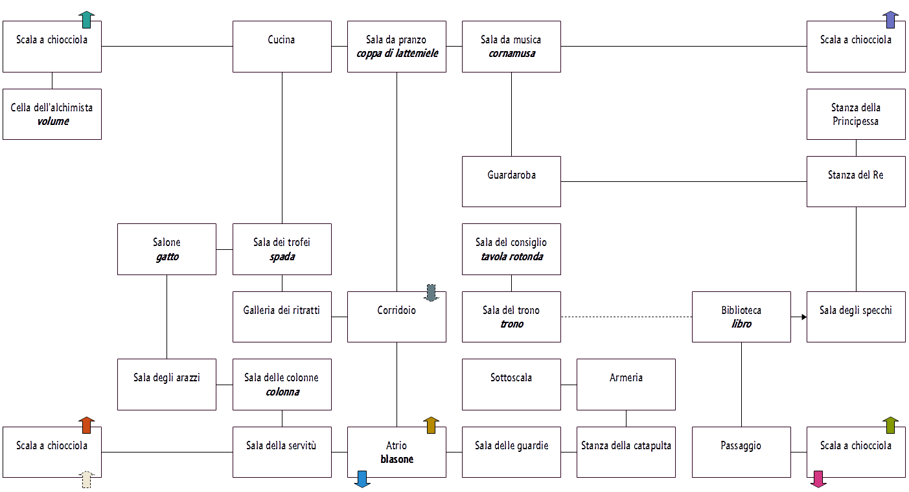
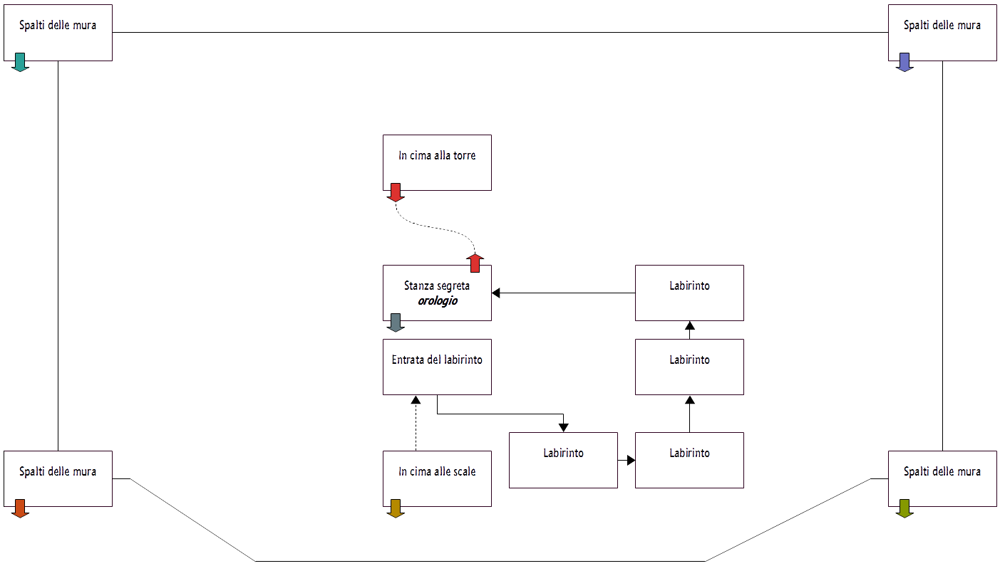
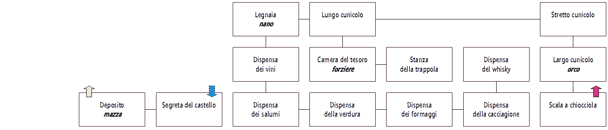

risorse | avventura nel castello
Non ho resistito alla tentazione di affrontare la celeberrima avventura di Enrico Colombini (per la precisione la 4a edizione restaurata rilasciata nel 1996) a distanza di decenni dall'ultima volta, e ho avuto ancora una volta il mio bel daffare a completarla. Raccolgo qui qualche appunto a futura memoria, dovessi rigiocarla tra qualche anno!
Le frecce indicano i passaggi da un piano all'altro, quelle tratteggiate un senso unico.
Il piano terra (click sull'immagine per ingrandirla).
Il primo piano con la torre (click sull'immagine per ingrandirla).
I sotterranei (click sull'immagine per ingrandirla).
Elenco dei principali oggetti dell'avventura e lo scopo che vi rivestono:
Per salvarsi dall'aeroplano:
PRENDI PARACADUTE SALTA
Una volta atterrati nella piazza d'armi non c'è altro da fare che entrare nel castello:
APRI PORTONE ENTRA
Conviene scendere subito nelle segrete per recuperare la mazza:
GUARDA BLASONE PRENDI OSSO INFILA OSSO POSA OSSO OVEST PRENDI MAZZA ALTO
È tempo di attuare il primo incantesimo:
EST NORD GUARDA COLONNA
ID è una parte dell'incantesimo, la seconda si trova nella bibioteca.
Prima di dirigersi verso la biblioteca, lasciare il paracadute nell'atrio (tornerà utile nel finale):
SUD EST POSA PARACADUTE OVEST OVEST ALTO EST BASSO OVEST NORD APRI LIBRO PRENDI FOGLIO LEGGI FOGLIO POSA FOGLIO
IOTA è la seconda parte dell'incantesimo. È ora di metterlo in pratica:
IOTAID
L'incantesimo IOTAID apre la strada verso la sala del trono, che riserva una sorpresa:
OVEST SIEDI SUL TRONO PRENDI CUSCINO POSA CUSCINO APRI ASTUCCIO PRENDI PERGAMENA
La pergamena contiene le indicazioni per uscire dal labirinto. È tuttavia necessario tradurla.
Il dizionario necessario per tradurre la pergamena è nella bibiloteca:
EST LEGGI LIBRO TRADUCI PERGAMENA POSA PERGAMENA
La tavola rotonda della sala del consiglio presenta un'incisione particolarmente utile:
OVEST NORD GUARDA TAVOLA
È giunta l'ora di imparare l'incantesimo dell'alchimista. Per aprire il suo volume occorre lo strumento giusto, che si trova nella sala da musica:
SUD EST EST NORD (*) OVEST NORD PRENDI CORNAMUSA OVEST OVEST OVEST SUD SUONA CORNAMUSA POSA CORNAMUSA LEGGI VOLUME
(*) Può essere necessario impartire il comando più volte. Insistere fino a quando non si lascia sala degli specchi per raggiungere la stanza del Re.
L'incantesimo BIGMEOW ci permette di sbarazzarci dell'orco; prima di raggiungerlo nei cunicoli sotterranei bisogna però prendere il gatto:
NORD EST SUD OVEST PRENDI GATTO SUD EST SUD OVEST ALTO EST BASSO BASSO NORD BIGMEOW
Senza più l'orco ad ostruire il passaggio si può raggiungere la camera del tesoro e il forziere lì custodito. È tuttavia necessario prima procurarsi l'occorrente per eliminare il fantasma che protegge il forziere, ovvero la coppa di lattemiele:
SUD ALTO ALTO NORD BASSO OVEST OVEST PRENDI COPPA
quindi la spada:
SUD OVEST NORD GUARDA ARMATURA PRENDI SPADA GUARDA SPADA
Ora si può aprire il forziere:
NORD EST EST EST ALTO SUD BASSO BASSO NORD NORD OVEST SUD APRI FORZIERE BEVI LATTEMIELE LEGGI SORTILEGIO SI APRI FORZIERE GUARDA FORZIERE PRENDI CORNO POSA SPADA
Manca un ultimo oggetto per lasciare il castello, che si trova all'interno del diamante che ci regalerà il nano se saremo gentili con lui:
NORD OVEST SALUTA NANO PRENDI DIAMANTE ROMPI DIAMANTE PRENDI CHIAVE POSA MAZZA
È tempo di entrare nel labirinto e raggiungere la cima della torre:
EST EST SUD SUD ALTO ALTO OVEST BASSO EST EST PRENDI PARACADUTE ALTO SPINGI PARETE
Per uscire dal labirinto occorre “senno”, in altre parole S-E-N-N-O:
SUD EST NORD NORD OVEST
L'orologio è fermo, perciò lo carichiamo con la chiave di cristallo:
CARICA OROLOGIO
Attendiamo la fatidica mezzanotte:
GUARDA OROLOGIO GUARDA OROLOGIO GUARDA OROLOGIO GUARDA OROLOGIO
Finalmente si può salire in cima alla torre:
ALTO SUONA CORNO
Suonare nuovamente il corno per chiamare soccorso:
SUONA CORNO
Pagina modificata il 13/06/2017